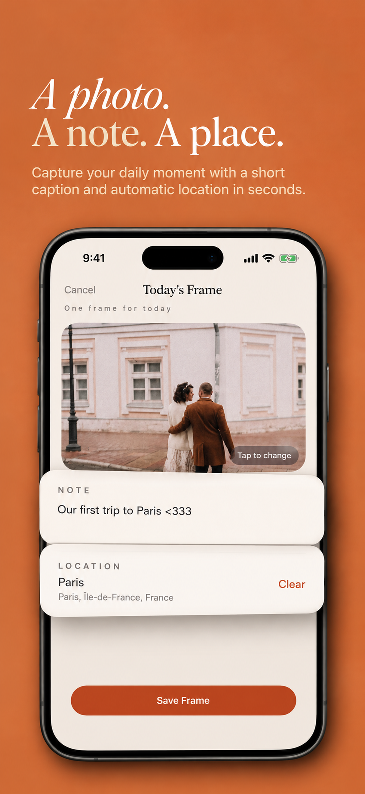

01 · DAILY RITUAL
One photo, one place, one honest note.
Capture a single frame each day without the noise of a 30,000-photo camera roll. Every memory stays anchored to the exact date and location it happened.